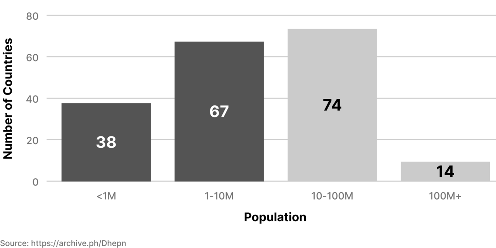

한 에세이로 읽는 네트워크 국가🔗
우리가 맨땅, 백지, 빈 택스트 버퍼(empty text buffer), 새로운 스타트업, 또는 빈 서판(clean slate)을 원하는 것과 똑같은 이유에서, 우리는 새로운 국가를 평화롭게 시작할 수 있기를 원한다. 왜냐하면 우리는 역사적 제약으로부터 벗어나 무언가 새로운 것을 건설하고 싶기 때문이다.
빈 서판을 원하는 재정적 수요는 명백하다. 사람들은 그저 새로운 출발을 위해 매년 수십억 달러를 쏟아부으며 수백만 에이커의 빈 땅을 구입하고, 수십만 개의 회사들을 설립한다. 그리고 이제 새로운 회사뿐 아니라 새로운 공동체, 그리고 심지어 새로운 화폐를 시작하는 것이 가능하며, 우리는 사람들이 이런 것들을 창조하기 위해 몰려드는 것을 볼 수 있다.
빈 서판의 사회적 가치 역시 명백하다. 기술 섹터만 보더라도, 새로운 회사를 세울 수 있는 능력은 지난 수십년간 수조 달러의 부를 창출했다. 만약 우리가 백지를 얻는 대신 쓴 종이를 지우고 써야만 하는 세상, 맨땅을 얻는 대신 기존 건물을 철거해야만 하는 세상, 새 회사를 세우는 대신 기존 회사를 개혁해야만 하는 세상을 상상해 본다면, 그곳에서 희소한 자원을놓고 벌어지는 끝없는 갈등은 명약관화하다.
우리는 아마도 이 상상 속 세상을 떠올리기 위해 머리를 쥐어짤 필요가 없을것이다. 우리가 현재 살고 있는 세상이 바로 이 상상 속 세상을 닮아 있기 때문이다. 먼 과거에 사람들은 오직 점토판에만 글을 쓸 수 있었고, 가까운 과거에 사람들은 기업가 정신을 가졌다는 이유로 처형당했고, 지금 현재 사람들은 고대의 주유소를 교체하는 것을 놓고 논쟁을 벌이고 있다.
이것이 바로 오늘날 국가들, 도시들, 국민들, 정부들, 기관들, 그리고 대부분의 물리적 세상이 처한 상황이다. 새로운 것을 떠올릴 수 없기 때문에, 우리는 옛 것을 놓고 싸운다.
그러나 아마도 우리는 이 상황을 바꿀 수 있을 것이다.
어떻게 새로운 국가를 시작하는가🔗
새로운 국가를 시작하기 위한 적어도 여섯 가지의 방법이 있다; 세가지는 전통적이고, 다른 세가지는 비전통적이다. 우리는 이 여섯 가지 방법 모두가 일곱번째 방법에 비해 열등하다는 것을 보여주기 위한 목적에서, 이 여섯 가지 방법을 먼저 소개하고자 한다.
1. 선거🔗
새로운 국가를 시작하기 위한 가장 전통적인 방법은 선거에서 충분한 권력을 얻어 (a) 기성 국가의 법령을 개정하거나 (b) 국제 사회의 승인을 받아 완전히 새로운 국가를 깍아 내는 것이다. 이것은 가장 널리 논의되는 경로이고, 가장 붐비는 경로이다. 아마도 지나치게 붐비는 경로일 것이다.
2. 혁명🔗
두번째로 자명한 방법은 정치적 혁명이다. 우리는 이 방법을 권하지 않는다. 특히 결정적인 선거들은 종종 혁명이라고 불리지만, 보통 혁명은 유혈 사태를 포함한다. 혁명은 드물지만, 혁명이 새로운 정부를 의미한다는 것은 모두가 알고 있다.
3. 전쟁🔗
새로운 국가를 세우기 위한 세번째 전통적인 방법은 전쟁에 승리하는 것이다. 우리는 이 방법도 권하지 않는다. 물론 전쟁은 다른 두 전통적 방법들과 무관하지 않다. 실재로 선거와 혁명 모두 새로운 정치체(政治體; polity)를 만들어 내는 전쟁으로 이어질 수 있다. 혁명과 마찬가지로 전쟁 역시 드물고 바람직하지 않지만, 국경을 다시 그리는 한 방법이다.
4. 마이크로네이션(micronation)🔗
이제 우리는 비전통적인 방법에 도달했다. 비전통적 접근중 가장 명백한 방법은 – 그리고 "새로운 국가 건설"이라는 개념을 들었을 때 대부분의 사람들이 생각하는 방법은 – 한 괴짜가 해안 플랫폼이나 분쟁 중인 흙 덩어리 위에 깃발을 꽂고 스스로를 무인지상(無人之上)의 왕(king of nothing)으로 선포하는 것이다. 선거의 문제가 너무 많은 사람들이 여기에 신경을 쓴다는 것이라면, 소위 마이크로네이션의 문제는 너무 적은 사람들이 여기에 신경을 쓴다는 것이다. 화폐와 마찬가지로 국가 역시 본질적으로 사회적인 것이기 때문에, 허허벌판에 있는 소수의 사람들은 군대를 조직할 수도, 법률을 집행할 수도, 다른 국가들에게 승인을 받을 수도 없을것이다. 더욱이, 사람들이 자기 뒷마당에서 무해하게1 가짜 국가를 만들고 역할 놀이(LARP)를 하는것은 기존 국가가 용납하겠지만, 주권에 대한 실질적인 위협에는 진짜 총칼로 대응할 것이다. 그것이 포클랜드이든 사할린이든 간에.
5. 시스테딩(seasteading)🔗
여기서부터 일이 흥미로워지기 시작한다. 패트리 프리드만(Patri Friedman)이 구상하고 피터 틸(Peter Thiel)이 후원한 시스테딩(seasteading)은 기본적으로 크루즈선들이 존재한다는 관찰에서 시작한다. 그리고 우리가 크루즈선을 타고 한번에 해상에 몇주간 머물던 것으로부터, 공해상의 반영구적 거주지로 (물론 빈번한 입항과 함께) 옮아갈 수 있는지를 묻는다. 만약 크루즈선의 비용이 하락한다면, 이 접근법의 실현 가능성은 더 높아질 것이다. 하지만 현재도 일년 내내 크루즈선에 사는 사람들이 있음에도, 우리는 아직 규모 있는 실례를 보지 못했다.2
6. 우주(space)🔗
아마도 새로운 국가를 시작하는 경로 중 가장 선망을 얻는 것은, 다른 행성들을 식민지로 만든다는 아이디어일 것이다. 시스테딩이나 마이크로네이션과 달리, 우주 탐사는 정부 차원에서 시작되고 많은 영화와 TV 프로그램에서 미화되어 더 높은 사회적 수용도를 누리고 있다. 이 경로는 보통 완전히 미친 생각이라기 보다는, 한시적으로는 기술적으로 실현 불가능한 것으로 여겨진다. 일론 머스크(Elon Musk)의 스페이스X(SpaceX)는 화성에 새로운 국가를 시작하기 위한 물류소요를 심각하게 고려하는 한 기업이다.
7. 네트워크 국가(Network State)🔗
드디어 우리가 가장 선호하는 방법에 도달했다: 네트워크 국가. 우리의 아이디어는 클라우드를 먼저 진행하고, 영토는 마지막이라는 것이다. 물리적 영토에서 시작하기보다, 우리는 디지털 커뮤니티로 시작한다. 우리는 스타트업 사회를 창조하고, 이것을 네트워크 조합으로 조직하고, 네트워크 군도의 물리적 노드들을 크라우드펀드하고, 그리고, 때가 찼을 때, 마침내 진정한 네트워크 국가가 되기 위해 외교적 승인을 협상한다. 우리는 오픈소스 프로젝트로 배아적 상태의 국가(embryonic state)를 건설하고, 우리의 내부 경제를 원격 근무를 중심으로 조직하고, 얼굴을 맞댄 상황에서 기대할 수 있는 시민의식(civility)을 가꾸고, VR(virtual reality)에서 건축을 시뮬레이션하고, 우리의 가치를 반영하는 예술과 문학을 창조한다.
우리가 현실 세계에서 영토를 크라우드펀드할때, 그 영토는 반드시 이어져 있을 필요가 없다. 이는 인터넷이 우리로 하여금 위요지(圍繞地; enclave: (역주) 다른 국가의 영토에 둘러싸여 있는 영토) 들을 네트워크화 할 수 있도록 해준다는, 지금까지 과소평가되어온 사실 때문이다. 다시 말해, 네트워크 군도는 모든 영토들을 한 번에 한 곳에서 획득할 필요가 없다. 네트워크 군도는 클라우드 위에 수도(capital)를 가진 채로, 서로 다른 도시들 안의 천 채의 아파트들, 백 채의 주택들, 그리고 십수개의 컬드색(cul-de-sac)들을 새로운 종류의 프랙탈 정치체(政治體; polity)로 연결할 수 있다. 커뮤니티 구성원들은 이 위요지(enclave)들 사이를 오가고, 인접한 영토를 크라우드펀드한다. 모든 개별 주택과 그룹하우스는 독립적인 팽창의 기회를 네트워크 군도에 제공하는 것이다. 이러한 위요지가 일천 개 있다면, 동서남북 네 방향으로의 확장 대신, 사천 가지 방향으로의 확장이 가능하다.
지금까지 우리가 서술한 것은 민족적 디아스포라(ethnic diaspora), 즉 전세계에 흩어져있는 이민자들이 소통 채널을 통해 서로간에, 그리고 모국과 연결되어있는 것과 상당히 비슷하다. 그러나 여기에서 반전은 우리의 버전은 역(逆) 디아스포라(reverse diaspora)라는 것이다. 즉, 인터넷에서 먼저 형성된 공동체가 온라인으로 문화를 만들고, 그 후에야 대면으로 모여 거주지와 구조물들을 건설하는 것이다. 어떤 의미에서, 당신은 이 디지털 공동체의 물리적 전초기지 각각을 클라우드 대사관(cloud embassy)으로 생각할 수 있다. 마치 사람들이 비트코인을 더 잘 이해할 수 있도록 만들기 위해 세계 각지에 풀뿌리 운동으로 생겨난 비트코인 대사관(Bitcoin embassy)처럼 말이다. 신규 가입자들은 네트워크 국가의 가상(virtual) 또는 물리적 노드에 방문하여 베타테스트를 해보고, 떠날지 머무를지를 결정할 수 있다.
이제, 대사관들과 국가들에 대한 이 모든 이야기들과 함께, 혹자는 앞서 언급한 마이크로네이션과 마찬가지로 네트워크 국가 역시 하나의 역할놀이(LARP)에 불과하다고 주장할지 모른다. 그러나 마이크로네이션과 다르게, 네트워크 국가들은 규모있는(scaled) 역할놀이(LARP)가 되도록 설계되어 있다. 한 상상력이 많은 사람들에 의해 동시에 실천되고 준수될때, 그 상상력이 보여주는 위업이자 묘기인 것이다. 그리고 이러한 공유된 역할놀이(LARP)가 얼마나 강력할 수 있는지는, 지난 십년간 암호화폐들의 경험이 우리에게 보여주고 있다.
최소한으로 필요한 혁신(minimum necessary innovation)🔗
잠시 멈춰 요약해보자. 일곱번째 방법(네트워크 국가)과 이전의 여섯가지 방법(선거, 혁명, 전쟁, 마이크로네이션, 시스테딩, 그리고 우주) 사이의 주요 차이점은, 일곱번째 방법이 현실성(practicality)과 비현실성(impracticality)사이에 걸쳐 있다는 것이다.
이제 백만 명의 온라인 커뮤니티를 구축하고, 십억 달러의 디지털 화폐를 출범시킬 수 있고, 크라우드펀딩으로 VR에 설계한 건물들을 현실로 옮길 수 있다. 네트워크 국가 개념은 많은 현존하는 기술 스택들을 쌓아 올린 개념으로서, 새로운 기술의 발명—화성까지 가는 로켓이나 영구 거주용 시스테드와 같은—을 요구하지 않는다. 동시에, 네트워크 국가 개념은 선거, 혁명, 그리고 전쟁과 같은 뻔한 경로들을 피한다. 그 모든 경로들은 추악한 얼굴을 드러내고, 개인의 주도권을 위한 기회를 많이 제공하지 않는다.
다시 말해, 네트워크 국가는 미래의 물리적 혁신을 기다리는 대신, 우리가 이미 가지고 있는 가장 강력한 현존하는 기술 스택, 즉 인터넷을 중심으로 구축된 일련의 기술들을 사용하여 정치적 장애물들을 우회한다.
무엇이 새로운 국가로 간주되는가?(what-counts-as-a-new-country)🔗
이 일곱가지 방법들을 개괄한 시점에서, 주의 깊은 독자는 우리가 무엇이 "새로운 국가"인지 정의하면서 다소 급하고 허술하게 지나갔다는 점을 알아챌 것이다.
첫째, "새로운 국가"라는 단어로 우리는 무엇을 의미하는가? 한 가지 정의는, 새로운 국가를 시작한다는 것은 (화성 식민지와 같이) 완전히 새로운 영토에 정착하는 것을 의미한다는 것이다. 또 다른 정의는 단순히 정부의 형태를 바꾸는 것이 실재로 국가를 바꾼다는 것이다. 프랑스가 프랑스 제2공화국에서 프랑스 제2제국으로 옮겨간 것 처럼. 이러한 엄격한 또는 느슨한 정의들 대신, 우리는 새로운 국가에 대한 수치적(numerical) 그리고 사회적(societal) 정의들을 사용할 것이다.
수치적(numerical) 정의는 coinmarketcap.com과 유사한, 가상의 사이트인 nationrealestatepop.com의 모습을 떠올려 보는 것으로 시작한다. 이 사이트는 네트워크 국가가 되기를 꿈꾸는 스타트업 사회들의 암호학적으로 감사된(cryptographically audited) 국세조사(census)들을 집계한다. 이 대시보드는 공동체 구성원의 숫자, 구성원들이 보유하는 부동산 면적, 그리고 공동체의 온체인 세입(on-chain income)을 실시간으로 보여줄 것이다. 500만 명의 인구, (불연속적인) 수천 평방 마일의 공동체 보유 토지, 그리고 수십억 달러의 연간 세입을 가진 스타트업 사회는 수치상으로 의심의 여지 없는 중요성을 가질 것이다.
이는 차례로 우리를 사회적(societal) 정의로 인도한다: 다른 국가들에 의해 자기 결정권을 가진 합법적인 정치체(政治體; polity)로서 외교적 승인을 받은 것이 바로 새로운 국가이다. 이와 같은 쌍방적 관계들을 충분히 확보한 국가는, 아세안(ASEAN), OAS, 아프리카 연합(African Union), EU, 또는 UN과 같은 기존 국가들의 그룹에 가입할 수 있을 정도의 사회적 중요성을 가지게 될 것이다.
이러한 수치적 지표와 사회적 지표의 조합은 암호화폐의 등장과 아주 비슷하다. 처음에는 무시당했고, 이후에는 명백한 실패로 조롱당했지만, 발명된지 5년도 안되어 비트코인은 10억 달러 시가총액을 달성했고(수치적 성공), 곧이어 CNBC와 블룸버그에 우량주들과 함께 상장되었다(사회적 인정의 한 형태). 각 단계에서 비트코인은 자체적으로 수치적 상승을 유지할 수 있었고, 이에 따라 더 큰 사회적 인정을 얻을 수 있었다. 2020년에 이르러 비트코인은 중국인민은행, IMF, 골드만삭스, JP모건, 그리고 세계은행의 궤적을 바꿨다. 2021년, 비트코인은 주권 국가인 엘살바도르에서 법정 통화(legal tender)가 되었다. 그리고 2022년 중반, 중앙 아프리카 공화국이 엘살바도르를 따랐고, 파나마를 포함한 십수개의 국가들도 비트코인을 법정 통화로 고려하고 있다.
대부분의 국가들은 작은 국가들이다🔗
화폐가 수치적 측면과 사회적 측면 모두를 가지기 때문에 암호화폐는 이러한 수준에 도달할 수 있었다.3 사회적 찬사가 뒤따르기도 전에 수치들(numbers)은 쌓일 수 있다. 일단 비트코인이 쉽게 위조되거나 해킹될 수 없다는 점이 입증되자, 전세계의 수백만 암호화폐 보유자들이 공유했던 믿음은 BTC를 제로에서 수십억 달러의 시가 총액으로 만드는 데, 그리고 그로부터 BTC를 모든 블룸버그 터미널과 거래소에 상장시키기에 충분했다. 이런 종류의 사회적 견인은 더 많은 수치적 견인을 위한 길을 열었고, 선순환이 뒤따랐다.
스타트업 사회가 유사한 경로를 밟을 수 있을까? 물론이다. 암호학적으로 감사할 수 있는(cryptographically auditable) 국세조사(census)는 한 성장하는 스타트업 사회가 100만에서 1000만의 헌신된 디지털 시민들, 거대한 암호화폐 준비금, 수년에 결친 지속된 현존, 그리고 전 세계에 걸친 물리적 자산을 가지고 있다는 것을 증명할 수 있다. 이러한 수치적 견인은 외교적 승인이라는 사회적 견인을 성취하는 데 이용될 수 있다.
왜인가? 왜냐하면 대부분의 국가들은 작은 국가들이기 때문이다. 100만에서 1000만 인구를 가진 새로운 국가는 사실 대부분의 기존 국가들에 비길만 할 것이다. 왜냐하면 UN이 승인한 193개 주권 국가들 가운데 20%는 인구 100만 미만, 55%는 인구 1000만 미만이기 때문이다. 여기에는 일반적으로 합법적이라고 간주되는 많은 국가들, 예컨대 룩셈부르크(61만 5천), 키프로스(120만), 에스토니아(130만), 뉴질랜드(470만), 아일랜드(480만), 그리고 싱가포르(580만)와 같은 국가들이 포함된다. 이런 국가들의 "사용자 수(user count)"는 테크 기업 기준으로 볼 때 놀라울 정도로 작다!

물론, 단순한 양이 전부는 아니다. 구성원이 해당 국가의 자산 위에서 소비한 시간이 얼마나 되는지, 구성원의 순자산 중 어느 정도가 해당 국가의 통화로 저장되어 있는지, 구성원이 저장하고 있는 연락처 중 어느 정도가 해당 공동체 내부의 연락처들인지와 같은, 우리의 가상적 네트워크 국가에 대한 구성원들의 소속(affiliation)의 강도도 중요하다.
그럼에도 불구하고, 일단 우리가 페이스북이 30억, 트위터가 3억, 많은 개인 인플루언서가 백만이 넘는 팔로워 내지는 유저를 가지고 있다는 점을 기억한다면, 우리가 진정한 국민 의식(national consciousness)을 공유하고, 통용되는 암호화폐를 가지며, 전세계에 여러 조각의 영토를 크라우드펀드할 계획이 있는 100만에서 1000만 인구의 스타트업 사회를 건설할 수 있다고 상상하는 것이 더이상 지나치게 미친 생각이 아니게 된다. 인터넷을 통해, 우리는 이렇게 조각조각난 위요지(圍繞地; enclave)들을 디지털로 꿰매어 붙임으로써 외교적 승인을 쟁취하는 새로운 종류의 정치체(政治體; polity), 즉 하나의 네트워크 국가를 만들 수 있다.
LARP는 Live-Action Roleplaying Game의 약자로서, 역할 수행 게임으로 번역된다. 이는 또한 겉보기에 무의미해 보이는 가짜 놀이를 하는 성인들을 일컫기도 한다.
우리는 사실 장기적으로 시스테딩이 부활할 수 있다고 생각한다. 왜? 왜냐하면 시스테딩은 네트워크 국가 패러다임의 일부로 편입될 수 있기 때문이다. 당신은 크루즈선을 크라우드펀드할 수 있는 스타트업 사회를 성장시키기만 하면 된다. 물론 당신의 사회는 그렇게 비싼 것에서 시작하지는 않을 것이다; 당신의 사회는 지구상의 훨씬 더 수수한 영토 조각들을 획득하고 그 조각들을 네트워크 군도로 연결하는 것으로 시작하게 될 것이다. 그러나 일단 수만명의 구성원을 가진 스타트업 사회를 가지게 된다면, 크라우드펀드된 크루즈선과 같은 미친 일들이 가능해진다.
(중력상수 g와 같은) 이상화된 기술적 사실은 인간이 생각하는 바와 완전히 독립적으로 존재하는 반면, (국경의 위치와 같은) 이상화된 정치적 사실은 전적으로 인간이 생각하는 바에 관한 것이다.